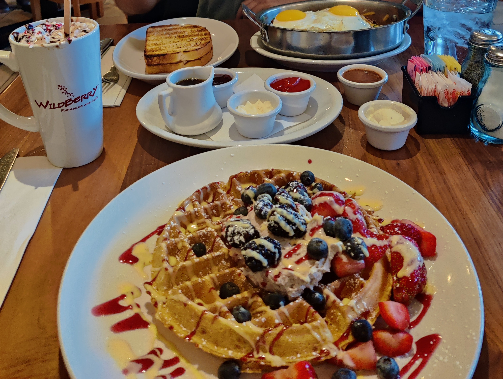

Suburbs
Kogii Kogii Express - Naperville
You get to build-your-own bibimbop bowls (tons of ingredients to customize)
Kogii Kogii Website
Katy's Dumplings - Westmont
One of my favorite Chinese restaurants-nice portions and great flavor
Katy's Dumplings Website
Wildberry Pancakes and Cafe - Schaumburg
Their "sweet" options aren't excessively sweet, and their skillets are yummy
Note: Try their berry marscapone !!
Wildberry Cafe Website 